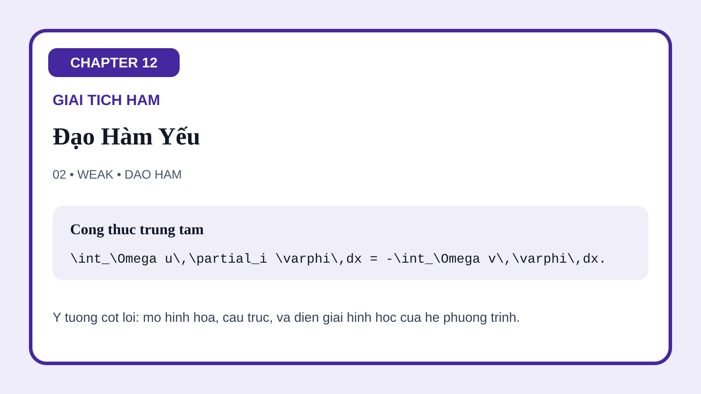
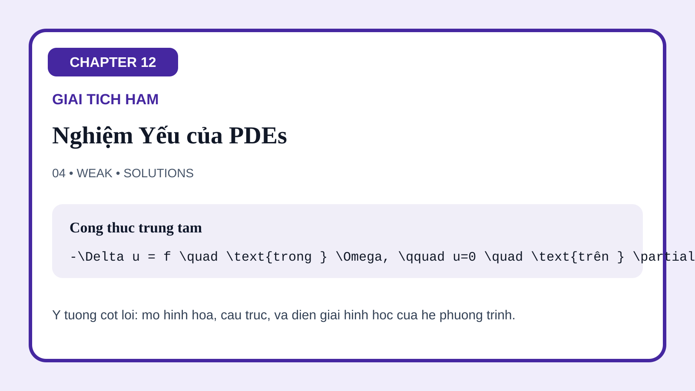
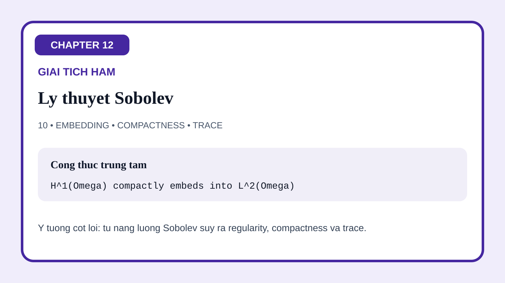

12-01 Không Gian Lp
Hình mở đầu so sánh các chuẩn hàm khác nhau và giúp sinh viên thấy rằng thay đổi p đồng nghĩa với thay đổi cách ta đo độ lớn, mức độ tập trung và năng lượng.
Trang này gom toàn bộ bộ minh họa của Chương 12 về giải tích hàm cho PDE. Các hình được sắp để làm rõ tiến trình khái niệm của chương: đo hàm trong các không gian Lp, mở rộng phép vi phân vượt khỏi tính trơn cổ điển, xây dựng Sobolev spaces, chuyển sang dạng yếu, chứng minh tồn tại bằng phương pháp biến phân, nâng cấp regularity, rồi nối sang phổ, phân phối và hình học của các bất đẳng thức.
Hình mở đầu so sánh các chuẩn hàm khác nhau và giúp sinh viên thấy rằng thay đổi p đồng nghĩa với thay đổi cách ta đo độ lớn, mức độ tập trung và năng lượng.
Hình này biến tích phân từng phần thành cây cầu hình học nối đạo hàm cổ điển với phép vi phân yếu.

Minh họa Sobolev làm rõ ý tưởng trung tâm của PDE hiện đại: regularity không chỉ là tính trơn điểm-một mà còn là khả năng kiểm soát biến thiên yếu.
Hình này viết lại PDE thông qua hàm thử và tích phân từng phần, giúp bước chuyển từ phương trình mạnh sang dạng yếu trở nên nhìn thấy được.

Hình học của định lý được mã hóa qua liên tục và coercive, làm rõ vì sao tồn tại và duy nhất có thể xuất hiện từ các bất đẳng thức năng lượng.
Hình này nắm bắt trực giác regularity cốt lõi: dữ liệu elliptic đủ tốt thường buộc nghiệm yếu trở nên trơn hơn dự kiến.
Hình phổ nối toán tử với các mode riêng của nó, cho thấy giải tích vô hạn chiều kế thừa trực tiếp triết lý chéo hóa của đại số tuyến tính.
Hình này cho thấy các đối tượng kỳ dị như nguồn điểm và đạo hàm của hàm bước đi vào PDE tự nhiên ra sao khi ta thay hàm bởi phân phối.
Hình học của không gian Lp xuất hiện ở đây qua bất đẳng thức tam giác, nhấn mạnh rằng giải tích hàm cũng là nghiên cứu về cách so sánh phi tuyến giữa các độ lớn.

Hình kết thúc mở rộng các ý tưởng Sobolev sang nhúng, compactness và trace, làm rõ chính xác đạo hàm yếu mua lại được điều gì về mặt giải tích.
